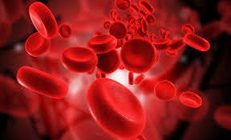

Bár az utóbbi másfél évben maximalizálták a kifizethető összeget, a plazmaadás még mindig sokaknak vonzó kereseti kiegészítés, ráadásul életmentő gyógyszerek készülnek a segítségével. Hogy készüljünk rá, mennyi ideig tart, és fájdalmas-e? Saját bőrünkön derítettük ki, mivel jár egy plazmavétel.
Egyetlen véradó három ember életét mentheti meg - többek között ezzel a kulcsmondattal toborozza évek óta a donorokat az Országos Vérellátó Szolgálat. A vérre óriási igény van az egészségügyben - a biztonságos ellátáshoz évente közel félmillió egységre van szükség -, ezért adományozóból sosem lehet elég. Maga a véradás viszont önkéntes és hivatalosan térítésmentes, honorálni étkezési utalvánnyal, illetve apróbb ajándékokkal szokták. Egyre népszerűbb viszont nálunk is a véradás egy speciális formája, a plazmaferezis, amelyben az egészségügyi ellátás számára szintén igen fontos vérplazmát adhatjuk le.
A folyamat hasonlít egy hagyományos véradáshoz, bár annál több ideig tart. Viszont a szervezetet sem viseli meg annyira - míg egy évben a férfiak maximum öt, a nők pedig négy alkalommal adhatnak vért, addig plazmát nemtől függetlenül 45-ször lehet adni. A "kalóriapótlásként" adott összeg is jóval magasabb plazmaadás esetén, bár egy 2017-es szabályozást követően már kevesebbet vihetnek haza az adományozók. Mit is vesznek le tőlünk a bő 30 perces folyamat során, és kell-e tőle tartanunk?
A vérplazma vérünk egyik összetevője, 90 százalékban vízből áll, de fehérjéket, különböző ásványi anyagokat és hormonokat is tartalmaz. Olyan, mesterségesen nem előállítható anyagok vannak benne, amelyből életmentő gyógyszerek születnek - a budapesti és vidéki centrumokban levett plazmából immunhiányos betegséggel küzdők, vérzékenységben szenvedők, csontvelő-átültetésen átesett, illetve égési sérülést szenvedett emberek kezelésére szolgáló készítményeket állítanak elő.
A vérzékenységgel küzdőknek akár hetente 2-3 alkalommal is a szervezetükbe kell juttatni a plazmából származó készítményt, egyetlen beteg havi gyógyszeradagjához közel száz plazmaadó hozzájárulására van szükség. Magyarországon közel 400 embert érint a súlyos vérzékenység, vagyis az "A" típusú hemofília, az ő ellátásukra több mint félmillió plazmaadagra van szükség évente. A plazmaadókra az immunvédekezési zavarral született betegeknek is nagy szükségük van, egy beteg havi gyógyszeradagját körülbelül tíz plazmadonor fedezi, a körülbelül 300 magyar beteg ellátásához éves szinten 40 ezer donorra van szükség. A közösségi szolgálat ezért komoly motivációt jelenthet, sokaknak azonban ennél is többet ér, hogy a véradással ellentétben a plazmáért pénz is jár - igaz, hogy nem annyi, mint korábban.
Tavaly év elején az állam egy törvénymódosítással 3665 forintban maximalizálta a plazmaadásért kifizethető összeget. Magyarázatuk szerint ezzel akarták elejét venni, hogy a plazmavételezésre szakosodott cégek egymást túllicitálva "megélhetési" plazmaadókká tegyék az ügyfeleket, és elsősorban az önkéntesség és a segíteni akarás, ne pedig az anyagi haszon vonzza őket. Hivatalosan a pénzt ilyenkor sem a plazmaadásért kapják a donorok, hiszen az szervkereskedelemnek minősülne, amelyet a törvény egész Európában büntet. Az összeg az utazási költséget, illetve a donáció miatt kieső időt hivatott kompenzálni. Emellett a helyszínen több más figyelmességgel - fehérjeszelet, csokoládé, szendvics, üdítő, ingyenesen használható kávéautomata, gyümölcskosár - is kompenzálják a plazmacentrumok az adományozók idejét és erőfeszítéseit.
|  |